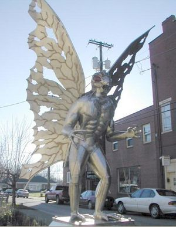

|  |
Bonjour, je suis Cindy. Je suis un homme-papillon qui vivait en Virginie, quand des chasseurs m'ont prise pour un canard. J'ai été blessée, mais le refuge m'a soignée puis adoptée. Aujourd'hui, je vis tranquillement au refuge, dans l'attente d'une famille calme, compréhensive et soumise à mes désirs. Je me nourris plus ou moins seule (d'animaux morts ou vivants), je ne suis néanmoins pas contre quelques dont de divers êtres de la part de ma futur famille. Je m'entends très bien avec les humains, notament quand ils sont bien serviles, en revanche, je m'entends assez mal avec les autres animaux souvent moins dociles, pour un court temps cependant... Dans ma vie j'adore chanter, je serai très heureuse d'avoir une famille avec qui je pourrai partager cette passion que j'ai depuis toute petite. |